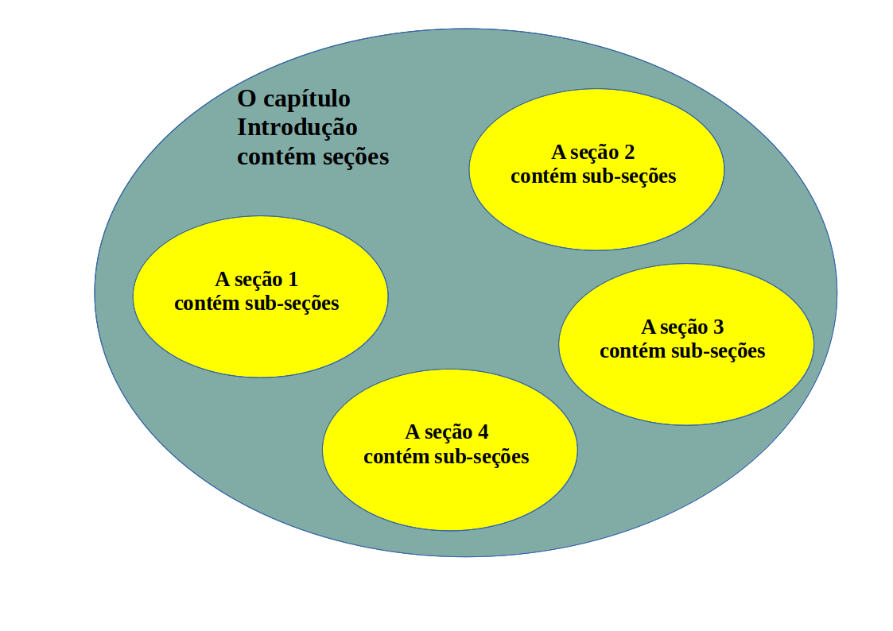
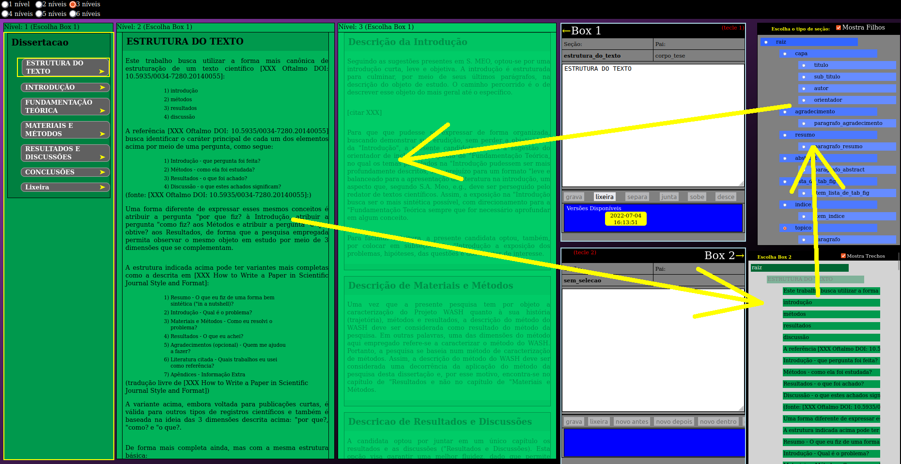
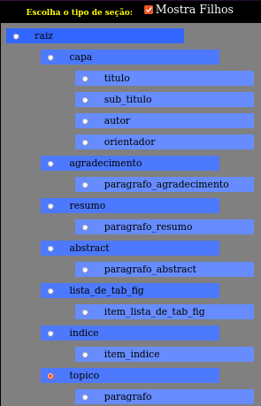

Forma vs. Conteúdo - Manual do RedarTex
O presente documento é o manual do editor de textos RedarTex, criado por Victor Mammana.
Introdução
Redigir um texto científico requer a organização de suas seções de forma a falicitar a compreensão pelo leitor, o que toma bastante tempo do autor. O problema é que o autor demora para consolidar uma compreensão de como o seu texto será organizado, causando uma extenuante espiral de criação e destruição de seções, parágrafos, capítulos.
Além disso, é necessária uma disciplina tipográfica que acaba atrapalhando o processo criativo, dado que dele tira muita energia, que é desviada para garantir a aparência do documento (tipo de letra, tamanho das letras, tipo de parágrafo, etc.).
Esta desfocalização ocorre justamente no momento em que toda a energia deveria estar focalizada no conteúdo. É comum, em editores convencionais, o autor se perder na organização de capítulos, seções, sub-seções e sub-sub-seções de seu texto.
Por seu lado, a tipografia de documento é um assunto que requer muito conhecimento e deixá-lo a cargo do autor normalmente deixa o texto com baixa qualidade visual, sem tirar proveito da padronização, que facilita a leitura.
Uma solução clássica para evitar que o autor tenha que perder energia com a tipografia de seu documento é o uso do processador TeX.
Segundo a Wikipedia:
| O TeX é um sistema de tipografia desenhado e escrito principalmente por Donald Knuth[1] e lançado em 1978. (...) o TeX foi projetado tendo em vista dois objetivos principais: permitir que qualquer pessoa produza livros de alta qualidade com o mínimo esforço e fornecer um sistema que produza exatamente os mesmos resultados em todos os computadores em qualquer momento.[2] O TeX é um software livre, o que o torna mais acessível a um número maior de pessoas. |
Mas existe uma barreira de aprendizagem muito alta para o uso do TeX, ou de seu sistema de macros LaTeX.
Normalmente, a pessoa que não vai seguir carreira acadêmica faz apenas duas teses na vida: a dissertação de mestrado e a tese de doutorado. Mesmo considerando as dores de cair na armadilha de usar um editor tipo "Word" na dissertação de mestrado, situação que geralmente produz textos fora dos padrões editoriais, é comum que os autores caiam novamente nela. Isso porque, se for para o doutoramento, o autor se deparará com o mesmo dilema do mestrado: "será que vale a pena perder tempo aprendendo o TeX, se eu só vou usar mais uma vez?". A verdade é que a demanda do doutorado não é estímulo suficiente para motivar o pós-graduando a vencer a barreira de aprendizado do Tex, porque essa ferramenta dificilmente será usada novamente. O custo de aprender a usá-la acaba não compensando.
Por que o RedarTex foi criado?
O objetivo do RedarTex é criar um meio de diminuir essa barreira de aprendizagem, retirando as distrações que acabam emperrando o processo criativo de elaboração do texto, mas garantindo uma alta qualidade tipográfica no texto final da dissertação ou tese.
Um segundo objetivo do RedarTex é prover um meio de organizar as seções, criando um sistema otimizado de navegação pelas seções do texto.
Um terceiro objetivo do RedarTex é integrar ferramentas de Análise de Linguagem Natural em português para auxiliar a redação do texto e a identificação de erros de português, provendo índices de originalidade e melhorando a qualidade dos textos produzidos pela academia brasileira. Este terceiro objetivo ainda está em desenvolvimento.
A descrição abaixo tem o papel de especificação do sistema e por isso pode parecer um pouco complicada para o usuário final. Nesse caso, basta ler muitas vezes...
A utilização do sistema é de certa forma auto-explicativa, mas alguma características demandam um pouco de prática, como a navegação com as setas. Essa navegação foi desenhada para ser otimizada, no sentido de reduzir o número de passos (estados) para chegar nas funcionalidades desejadas, bem como o número de teclas necessárias para operar.
Conceito de Nível
O uso de níveis hierárquicos em textos científicos é uma forma de criar uma taxonomia de abordagens de assuntos, que organiza o discurso para facilitar sua compreensão por parte do leitor.
A taxonomia é uma aplicação da teoria de conjuntos, através da qual se buscam formas de organizar o conhecimento em conjuntos disjuntos, ou seja, conjuntos que não têm elementos em comum.
Podemos pensar nos capítulos de uma tese como esses conjuntos disjuntos, todos contidos no conjunto "tese".
Essa "taxonomia de abordagem de assuntos" pressupõe uma estrutura hierárquica, que vai sendo construída recursivamente até os níveis mais baixos e elementares. Na imagem abaixo o conteúdo do capítulo "Introdução" é mostrado.
Assim, os capítulos contém seções, que precisam respeitar a forma de abordagem pertinente a aquele capítulo, e as seções contém sub-seções que, por sua vez, também respeitam essa restrição. As sub-seções, por sua vez, podem conter sub-sub-seções e assim recursivamente. Outra restrição complementar é a que determina que "não é permitido usar a abordagem de um capítulo (por exemplo, Materiais e Métodos) numa seção de outro capítulo (por exemplo, Introdução").
Isso significa, também, que a abordagem adotada para tratar um assunto num determinado capítulo não se repetirá em outro capítulo.
Uma consequência importante dessas restrições é que a intersecção de dois capítulos diferentes vai resultar em um "conjunto vazio de abordagens de assuntos", ou seja, não existem abordagens de assuntos que se repitam dentre dois capítulos diferentes, mesmo que o assunto em si se repita.
É comum que um mesmo assunto seja tratado em dois capítulos diferentes, porque os capítulos precisam dialogar, mas a abordagem desses assuntos é que não se repete. Por exemplo: imagine uma tese sobre a história do Projeto WASH. É natural que o programa OLPC seja citado várias vezes em capítulos diferentes, mas as abordagens têm que ser diferentes, sob pena de ferir um princípio da Taxonomia.
Essa taxonomia de "formas de abordagem de assuntos" ajuda muito o leitor a organizar seus pensamentos quando está lendo: ele sabe que a forma de tratar um determinado assunto na Introdução não se repitirá nos demais capítulos, por exemplo. Isso traz ganhos em termos de concisão, rastreabilidade, organização e coerência, evitando redundâncias e conflitos de informação (e.g. seria desastroso se um conceito que se consolidou na "Introdução" fosse desconstruído na "Conclusão", deixando a tese incoerente).
Os índices usados tanto em dissertações como em teses são o meio de organizar visualmente essa "taxonomia", facilitando a busca não sequencial de informações no texto. Abaixo é reproduzido um trecho de índice obtido no site "Educação UmComo", o qual aqui será citado como exemplo:
Na imagem acima vemos os dois primeiros capítulos como nível 1:
- Exemplo de Capítulo: "INTRODUÇÃO"
- Exemplo de Capítulo: "PRESSUPOSTOS TEÓRICOS RELATIVOS À DEFICIÊNCIA"
Na imagem acima as seções estão como nível 2:
- Exemplo de seção: "Apresentação" (no Capítulo 1)
- Exemplo de seção: "Objetivos" (no Capítulo 1)
- Exemplo de seção: "Os tipos de deficiência" (no Capítulo 2)
- etc.
Na imagem acima as sub-seções estão como nível 3, a exemplo de:
- Exemplo de sub-seção: "Objetivo Geral" (no Capítulo 1, Seção 4)
- Exemplo de sub-seção: "A deficiência física" (no Capítulo 2, Seção 2)
- Exemplo de sub-seção: "Transtornos da linguagem" (no Capítulo 2, Seção 4)
- etc.
Na exemplo da imagem acima o texto comporta sub-sub-seções, que estão como nível 4:
- Exemplo de sub-sub-seção: "A comunicação aumentativa e alternativa" (no Capítulo 2, Seção 2, Sub-Seção 1)
- Exemplo de sub-sub-seção: "O Sistema Braille" (no Capítulo 2, Seção 2, Sub-Secão 3)
- etc.
É importante notar que o exemplo citado se utiliza de numeração nas seções e sub-seções, além da numeração nos Capítulos. Desta forma, os capítulos têm um númeral antes do nome do capítulo, as seções têm 2 numerais separados por um ponto, as sub-seções têm 3 numerais separados por pontos e as sub-sub-seções têm 3 numerais, também separados por pontos.
Para exemplificar a relação entre os níveis, seções, sub-seções num texto de uma dissertação editada pelo RedarTex foi elaborada a tabela abaixo:
| Nível | Capítulo ou Seção |
|---|---|
| 1 | Capítulo |
| 2 | Seção |
| 3 | Sub-Seção |
| 4 | Sub-sub-Seção |
A imagem abaixo mostra a organização de capítulos, seções e sub-seções no caso de uma dissertação.
O RedarTex suporta o encadeamento de sub-seções, com níveis maiores que 3, mas o autor não recomenda ainda o uso desse recurso, porque não foram testadas as consequências da exebição de muitos níveis em telas de computador pequenas, o que pode prejudicar a usabilidade.
Descrição da Interface
Abaixo vemos um "print" da janela principal do RedarTex
Na imagem acima vemos 5 regiões principais:
- Janelas de Nível: engloba as janelas que mostram as seções, organizadas em níveis. A Janela de Nível 1 tem o nível mais alto das seções, que no caso de uma dissertação, por exemplo, são os capítulos da dissertação. No formato dissertação normalmente há uma quebra de página nas seções do nível 1.
- Árvore de Seções: é uma forma diferente de ver as mesmas seções que são mostradas nas Janelas de Nível. Aqui todas as seções são mostrados numa mesma janela, organizadas por níveis no formato de árvore. Quanto mais à direita a seção, mais baixo é o nível, sendo que "raiz" é o nível 0.
- Box 1: mostra a seção que foi selecionada pelo cursor quando este estava em um Janela de Nível. Se o cursor muda de uma Janela de Nível para a Árvore de Seções ou para a Árvore de Tipos de Seções, o Box 1 continuará mostrando o conteúdo da última seção visitada em qualquer uma das Janelas de Nível.
- Box 2: mosra a seção que foi selecionada pelo cursor quando este estava na Árvore de Seções.
- Árvore de Tipos de Seções: mostra a hierarquia de tipos de seções, indicando quais as opções de filhos para uma determinada seção.
Navegação na Interface
O RedarTex foi desenhado para ser utilizado por meio do teclado. O motivo é reduzir o custo de operação associado aos "erros" de posicionamento característicos do uso do Mouse.
O mouse é um instrumento muito mais custoso em termos de usabilidade, uma vez que posicionar o cursor em um elemento da tela, seja um botão ou menu, requer correções sucessivas de posicionamento.
Experimente você mesmo: quando o usuário move o mouse para posicionar o cursor sobre um elemento da tela, é comum "passar do ponto", ou seja, o cursor vai além do elemento onde se desejava posicioná-lo. O usuário é obrigado a "voltar um pouquinho" e, não raramente, "passa do ponto" novamente, requerendo um novo ajuste. Esse processo diminui muito a eficiência de interação, trazendo custos motores e cognitivos para o usuário.
O teclado é muito mais eficiente na interação com a tela, desde que o usuário dedique um pouco de tempo para "aprender as teclas".
Quanto menos teclas para decorar melhor a experiência de interação.
Da mesma forma, a experiência para o usuário fica melhor se forem reduzidos os "estados" que precisam ser percorridos para acionar uma determinada função.
No RedarTex buscou-se otimizar essa interação, restringindo a operação ao uso das seguintes teclas, cujas funções serão detalhadas mais a frente:
- Setas (cima, baixo, direita, esquerda)
- Setas com Shift apertado
- PageDown
- Home
- Tab
- teclas "1" e "2"
- Escape ou ESC
- Espaço
Fluxo de navegação na interface
O fluxo de navegação nas janelas do RedarTex é controlado pelas setas direita e esquerda. O fluxo fica preso em um laço: quando o usuário atinge a última janela, volta para a primeira. Esse fluxo circular pode se dar tanto no sentido horário quanto no sentido anti-horário.
| Ao teclar a seta para direita a navegação ocorre no sentido ANTI-HORÁRIO |
Ao teclar a seta para esquerda a navegação ocorre no sentido HORÁRIO | ||
|---|---|---|---|
|

|
|
- Janelas de Nível
- Árvore de Seções
- Árvores de Tipos de Seções
A sequência acima é obtida teclando a seta para direita.
A sequência, no sentido horário, começando nas Janelas de Nível é:- Janelas de Nível
- Árvores de Tipos de Seções
- Árvore de Seções
A sequência acima é obtida teclando a seta para esquerda.
É importante notar que o número de Janelas de Nível mostrado na tela depende das características do documento apresentado e de qual radio button da Árvore de Tipos de Seções está selecionado. Uma explicação detalhada sobre esses radio buttons é feita adiante.
Teclas
O RedarTex usa as seguintes teclas:
| Tecla | Função |
|---|---|
| Seta para Direita | Acessa o nível inferior em relação à Janela de Nível atualmente selecionada, mudando o cursor para a próxima Janela de Nível à direita, se houver um filho no nível inferior. Se estiver no nível mais baixo, ou se a seção atual não tiver filhos no nível inferior, acessará a Árvore de Seções. Se estiver na Árvore de Seções, acessará a Árvore de Tipos de Seções. Ao acessar o próximo nível, o cursor recai sobre a primeira seção numa hierarquia inferior (filho). Se o cursor está numa seção que não tem hierarquia inferior (e.g. "paragrafo"), então o cursor vai direto para a Árvore de Seções. Se a seção onde estava o cursor, antes de teclar a seta, é do tipo parágrafo, então não há filhos e ao teclar seta para direita, o cursor irá para a árvore de seções. Se a seção onde estava o cursor, antes de teclar a seta, era do tipo tópico, e se esse tópico tiver filhos, então ao teclar a seta para a direita, o cursor recairá sobre o filho. Se a tecla Shift estiver pressionada, então o cursor recairá sobre o último visitado naquele nível. |
| Seta para Esquerda | Acessa o nível superior ao atualmente selecionado, mudando o cursor para a Janela de Nível à esquerda, caso o nível atualmente selecionado não seja o mais alto. Se estiver no primeiro nível ("nivel_1"), acessará a Árvore de Tipos de Seções. Se estiver na Árvore de Tipos de Seções, acessará a Árvore de Seções. O cursor recairá sobre o "pai" da seção. Se o cursor estava na Árvore de Seções, então o cursor recairá sobre a última seçào visitada naquela particular Janela de Nível. Se o cursor estava na Árvore de Tipos de Seções, ao teclar seta para esquerda o cursor recairá sobre a última seção visitada na Árvore de Seções. |
| Seta horizontais (direita/esquerda) + Shift | Quando aperta o shift juntamente com a seta e o cursor está em qualquer um dos "niveis", o cursor recai sobre o último visitado. Quando está em Árvore de Seções, ou em árvore de tipos de seçòes, o comportamento não se altera em relação a não pressionar shift. |
| Seta verticais (para cima e para baixo) | As setas para cima e para baixo movem o cursor num mesmo nível acessando a seção anterior ou inferior, respectivamente. Se o cursor já estiver na primeira seção e a seta para cima for acionada, o cursos se moverá para a última seção daquele nível. Se o cursor estiver na última seção daquele nível e a seta para baixo for acionada, o cursor se moverá para a primeira seção daquele nível. Se o cursor estiver numa janela de nível, o conteúdo da seção é mostrado no Box 1. Se o cursor estiver na janela de árvore de seções, então o conteúdo da seção é mostrado no Box 2. |
| Home | A tecla Home leva para a primeira seção do nível selecionado. |
| PageDown | A tecla PageDown leva para a primeira seção tópico que tenha um filho do nível selecionado. |
| "1" | A tecla "1" faz entrar no modo de edição através do Box 1. O Box 1 é uma janela para alterar o texto da seção. Basta teclar "1" e começar a digitar para que o texto seja alterado. Mas o texto não estará salvo. Para salvar é preciso teclar "Tab". Se quiser abandonar as alterações é preciso teclar "Esc". Quando o sistema entra em modo edição pelo acionamento da tecla "1", as setas não mais permitem movimentar o cursor pelas seções. Quando qualquer tecla for acionada nesse modo, a janela ficará amarela, indicando que está em edição. Portanto, nesse modo as setas passam a servir para movimentar o cursor dentro do campo de edição do Box 1. Abaixo do texto de edição do Box 1 estão pequenas caixinhas que mostram as várias versões gravadas daquela seção. Ao entrar no Box 1 com "1" é possível navegar pelas versões usando shift-setas, desde que o box não tenha começado a ser editado. Se vc quer navegar nas versões com shift-setas, e já estiver editando o texto, isso só será possível se vc teclar Esc, saindo do modo edição e entrando de novo com "1", mas sem digitar alguma tecla que leve o sistema a editar o texto da seção. |
| "2" | A tecla "2" faz entrar no modo de edição através do Box 2. O Box 2 é uma janela para alterar o texto da seção. Basta teclar "2" e começar a digitar para que o texto seja alterado. Mas o texto não estará salvo. Para salvar é preciso teclar "Tab". Se quiser abandonar as alterações é preciso teclar "Esc". Se o cursor estiver na Árvore de Tipos de Seções quando a tecla "2" for acionada, então o Box 2 entra em modo de inserção de uma nova seção, que pode ocorrer antes, depois ou abaixo da seção atual, dependendo do botão da tela que for acionado com o mouse. Quando o sistema entra em modo edição pelo acionamento da tecla "2", as setas não mais permitem movimentar o cursor pelas seções. As setas passam a servir para movimentar o cursor dentro do campo de edição do Box 2. Os efeitos de edição descritos no box 1 acima valem para o Box 2, exceto na questão de inserção de uma nova seção. |
| Tab | Se o sistema estiver em modo de edição, ou seja, se a tecla "1" ou a tecla "2" foram acionadas e o texto dos Box 1 ou 2 foi alterado, então a tecla "Tab" gravará uma nova versão do trecho, sem prejuízo para as demais. |
| Escape ou Esc | Permite sair do modo edição sem gravar. Ou seja, se o sistema estiver em modo edição, ou seja, se as teclas "1" ou "2" foram acionadas para permitir a edição nos Box 1 ou 2, ao acionar a tecla "Esc" o sistema sai do modo edição e o cursor pode voltar a ser movimentado com as setas. |
| Espaço | Se o editor não estiver no modo ediçào, ou seja, se não foram usadas as teclas "1" ou "2", então é possível transpor a seleção nas janelas de nível (janelas verdes) diretamente para a janela de Árvore de Seções, sem o uso da seta para a direita. Nesse caso, a seleção na janela de níveis é diretamente apresentada na Box 2, e a Box 1 passa a apresentar a seleção anterior, para evitar que Box 1 e Box 2 apontem para a mesma seção. |
Cliques
Existem algumas ações que só estão disponíveis mediante cliques.
Você pode clicar na bolinha branca que fica à esquerda do nome do tipo de seção, na Árvore de Tipos de Seções. Ao fazer isso, o sistema muda o modo de visualização. Por exemplo, ao clicar ao lado de "capa", apenas as seções relacionadas à "capa" serão mostradas. Se clicar em "topicos" apenas a estrutura de tópicos será mostrada. Para mostrar a estrutura de tópicos juntamente com seus parágrafos, é preciso selecionar o checkbox "Mostrar Filhos" na janela de Árvore de Tipos de Seções.
Ao passar o mouse sobre uma seção, uma janela "fantasma" aparecerá por um tempo curto, mostrando algumas das características daquela seção.
Seletor de tipos de seções: Radio Button
O RedarTex tem uma estrutura configurável de texto, com a possibilidade de definição de uma hierarquia de tipos de seções. A janela da Árvore de Tipos de Seções mostra como é essa hierarquia: Na imagem vemos todos os tipos de seções que podem estar presentes, ou não, eu um texto editado pelo RedarTex.
Esta estrutura tem base em publicações sobre estruturação de textos científicos, em particular teses.
Os tipos de seções são representados por retângulos azuis contendo um nome e uma bola branca do lado esquerdo. Essa bola branca é do tipo radio button e é "clicável".

Na imagem acima está indicado um conjunto de radio buttons de alguns netos da raiz
A raiz é o pai de todos os tipos de seções.
Todos os tipos de seções são filhos ou netos de raiz. A estrutura de texto atualmente em uso no RedarTex não apresenta bisnetos de raiz por uma questão de simplicidade, embora o sistema preveja essa possibilidade.
São exemplos de filhos de raiz:
- capa
- agradecimento
- índice
- tópico
São exemplos de netos de raiz:
- título
- paragrafo_resumo
- item_indice
- parágrafo
Nesta janela vemos também o checkbox Mostra Folhas.
Para explicar esse checkbox é preciso entender o conceito de folha no contexto da estrutura de dados Árvore. Uma explicação sobre Mostra Folhas será feita mais adiante, mas antes é preciso entender qual é o efeito de "clicar" no radio button da janela da Árvore de Tipos de Seções.
O que acontece quando "clico" no Radio Button?
Vimos que do lado esquerdo de cada tipo de seção da Árvore de Tipos de Seções existe uma bola branca "clicável" do tipo radio button.
O resultado de "clicar" num radio button dessa árvore depende do estado do checkbox Mostra Folhas.
Para compreender melhor o efeito vamos considerar que o checkbox Mostra Folhas não esteja marcado, como mostrado na figura abaixo:
Vamos agora ver o resultado de "clicar" no radio button que fica logo ao lado do tipo de seção topico.
Na imagem acima, o pequeno círculo amarelo à direita mostra o radio button do tipo de seção topico que foi clicado quando o checkbox Mostra Folhas não estava marcado. Vemos que o RedarTex está mostrando a estrutura de tópicos do texto.
Mais adiante veremos o que acontece se o radio button de um tipo de seção for clicado quando o Mostra Folhas estiver marcado, mas antes de entrar nisso, é preciso compreender os conceitos de árvore, raiz e folhas.
Conceituação: Árvore, raiz e folhas
Árvore é uma estrutura de dados que permite organizar a informação de forma hierárquica. Esse tipo de estrutura de dados é particularmente útil quando se quer "categorizar" dados. A definição de árvore é bem simples. Considerando que uma árvore é um conjunto de elementos abstratos, podemos definir árvore como:
| Árvore é um conjunto de elementos que são hierarquizados pela ideia de "paternidade": todo elemento tem um único pai, exceto o elemento raiz. |
Uma folha, em linguagem de estrutura de dados, é o filho que não tem filhos.
|
Como um texto científico tem suas seções hierarquizadas em níveis (já mostramos isso no começo deste manual), a estrutura de árvore é a escolha natural para representá-lo. |
No RedarTex um típico caso de "seção" que não tem filhos é o parágrafo. O parágrafo é um exemplo de nível mais baixo de Seção, porque não existem seções dentro do parágrafo e é por isso que ele é compreendido como uma folha da árvore
Em outras palavras, o parágrafo não tem filhos e por isso é o fim da "árvore de seções".
Outro exemplo de "seção" que não tem filhos é o tipo de seção imagem:
O tipo de seção imagem permite colocar uma figura no texto e, portanto, não permite seções dentro dele e é por essa razão que é considerado uma folha da árvore.
Efeito do Mostra Folhas
Quando o checkbox Mostra Folhas é marcado, as folhas são mostradas nas Janelas de Nível.
Compare as duas imagens abaixo. A da esquerda foi obtida após clicar no radio button do tipo de seção tópico, presente na janela Árvore de Tipos de Seções,.
| Resultado de clicar no radio button localizado ao lado de topico, quando Mostra Folhas está marcado. | Resultado de clicar no radio button localizado ao lado de topico, quando Mostra Folhas NÃO está marcado. |
|---|---|
| As folhas (no caso são parágrafos) estão sendo mostradas, o que permite fazer a leitura do texto. | As folhas (parágrafos) não estão sendo mostradas, o que facilita a visualização da estrutura hierárquica do texto. |
Importante observar que as folhas sempre são mostradas na janela Árvore de Seções e o checkbox Mostra Folhas não afeta o comportamento da janela Árvore de Seções.